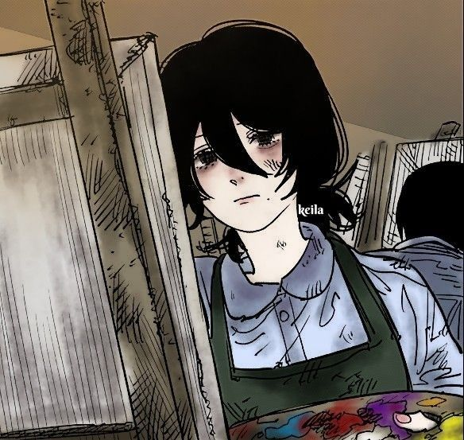

👤 Datos del Desarrollador

Mia Zaret Marin Flores
Estudiante de Programación | CBTis 142
📧 272 100 7887, miazaretmarinflores@gmail.com
🔗 **Portafolio:** github.com/https://github.com/miazaretmarinflores-sudo
Mi Trayectoria como Artista
Soy estudiante del cbtis 142, inicie en el mundo del arte desde que voy en la secundaria y es mi sueño, por eso inicie este curso de arte para aquel/lla, estudiante que este interesado en este tipo de cosas, me gustaria hacer que sus hablidades de artista salgan a la luz y que vean lo talentosos que son para que sigan su sueño de ser los mejores artistas.
He participado en varios concursos de artes y aunque no gano siempre me gusta mucho dibujar ya que es mi pasión como artista seguir dibujando.